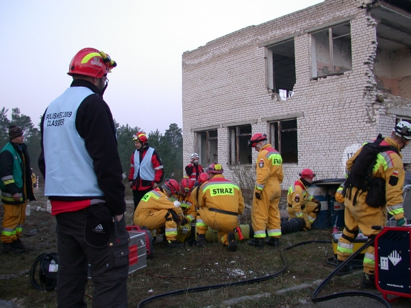

Once a USAR team and its sponsoring organisation have agreed to undergo the IEC, it is required to submit an application to the INSARAG Secretariat making use of the IEC Application Phase 1 Form (Annex E of the IEC/IER Guidelines).
The requirements for this application are as follows:
Upon receipt of the written application and the abbreviated PoE, the INSARAG Secretariat will evaluate whether the USAR team in questionis likely to attain the standards required for the IEC within the available timeline. If the INSARAG Secretariat is satisfied with the initial substantiation of the team’s capability, it will:
On the issue of prioritising teams on the IEC queue, a decision given by the INSARAG Steering Group in 2010 says that for the new teams requesting for an IEC, the relevant INSARAG Regional Group during their annual regional meeting will discuss and present recommendations in the next INSARAG Steering Group meeting on the geographical spread of the IEC and recommend the priority of teams to be classified in their region.
If the INSARAG Secretariat is not satisfied with the initial substantiation of the team’s capabilities, it will inform that country’s INSARAG Focal Point in writing indentifying the areas of concern.
